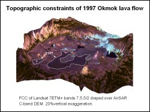
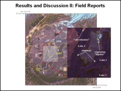

 Okmok, located on Unmak Island in the eastern Aleutians, is a large shield volcano with a ~9.5 km diameter centered caldera. Several vents on the caldera floor have been involved in eruptions over the last 200 years. Although this area is remote, copious amounts of digital remote sensing data exists for this volcano. Based on Landsat Enhanced Thematic Mapper (ETM) data, four historic lava flows can be distinguished on the caldera floor. The spectral signature for each of these flows is unique and controlled mainly by surface features, and minimally by mineral composition, water content and temperature.
 Along with the four identifiable flows, other surface structures can be detected using Landsat ETM and have been verified by field observations. The use of Landsat ETM as a tool for mapping lava flows at other volcanoes is recommended for regions without any other remote sensing data source. This study of Okmok caldera served as a good opportunity to compare Landsat ETM to higher spectral and spatial resolution sources (IKONOS, ASTER, AirSAR) and concludes that these sources add vast amounts of detail to the baseline of information acquired through Landsat ETM.